Data Binding
This section provides some simple examples of WPF data binding using Dyalog. Each example builds upon the previous ones, so it is advisable to work through them in order.
The example code on this page is included in the [DYALOG]\ws\wpfintro.dws workspace.
Example 1: Basic Data Binding
This example illustrates data binding using XAML to specify the user interface coupled with an APL function to drive it and handle the data binding.
The XAML
The XAML describes a Window containing a TextBox.
<Window
xmlns="http://schemas.microsoft.com/winfx/2006/xaml/presentation"
xmlns:x="http://schemas.microsoft.com/winfx/2006/xaml"
Name="Temp"
Title="Data Binding (Text)"
SizeToContent="WidthandHeight">
<TextBox Name="txt" Width="300" Margin="5"
Text="{Binding txtSource,Mode=TwoWay,UpdateSourceTrigger=PropertyChanged}"/>
</Window>The data binding expression
Text="{Binding txtSource,Mode=TwoWay,UpdateSourceTrigger=PropertyChanged}"/>
specifies that the Text property of the TextBox is bound to a value in the Binding Source (which has yet to be defined) whose path is txtSource. The binding mode is set to TwoWay, which means that any change in the TextBox will be reflected in a new value in the Binding Source, and any change in the Binding Source will be reflected in the TextBox. The value in the Binding Source will be updated when the property (in this case the Text property) changes.
The APL Code
The function Text that generates this example is shown below. The argument txt is the text to be displayed initially in the TextBox. The variable XAML_Text contains the XAML that describes the user interface.
∇ Text txt;⎕USING;str;xml;win
[1] ⎕USING←,⊂'System.Windows.Controls,WPF/PresentationFramework.dll'
[2] win←LoadXAML XAML
[3] win.txtBox←win.FindName⊂'txt'
[4]
[5] ⎕EX'txtSource'
[6] txtSource←txt
[7] win.txtBox.DataContext←2015⌶'txtSource'
[8]
[9] win.Show
∇
The utility function LoadXAML incorporates the 3 lines of code [5-7] used to create a WPF window from XAML that were coded in-line in the Temperature Converter Tutorial:
∇ win←LoadXAML xaml;⎕USING;str;xml
[1] ⎕USING←'System.IO'
[2] ⎕USING,←⊂'System.Windows.Markup'
[3] ⎕USING,←⊂'System.Xml,system.xml.dll'
[4] ⎕USING←,⊂'System.Windows.Controls,WPF/PresentationFramework.dll'
[5] str←⎕NEW StringReader(⊂xaml)
[6] xml←⎕NEW XmlTextReader str
[7] win←XamlReader.Load xml
∇
Line [1] defines the .NET search path needed to access the WPF controls:
[1] ⎕USING←,⊂'System.Windows.Controls,WPF/PresentationFramework.dll'Lines [2-3] use the utility function LoadXAML to load a WPF user-interface from the XAML and then use the FindName method to obtain a reference to the object named txt:
[2] win←LoadXAML XAML
[3] win.txtBox←win.FindName⊂'txt'Lines [5-6] initialise a new global variable called txtSource to the value of the argument. When using a global variable as a data binding source, it is generally advisable to establish a new variable by first expunging it. This is because its binding type (the exported type of the data bound variable) is stored in the workspace along with its value, and the binding type (were it to be incorrect) cannot be changed once it has been established:
[5] ⎕EX'txtSource'
[6] txtSource←txtLine [7]creates a Binding Source object using 2015⌶ and assigns it to the DataContext property of the TextBox object. As it is a character vector, the exported Type for the bound variable txtSource is System.String, which is appropriate for the Text property of a TextBox:
[7] win.txtBox.DataContext←2015⌶'txtSource'Line [9] displays the Window:
[9] win.ShowAlthough the APL local variable win goes out of scope when the function terminates, the Window remains visible until the user has closed it.
Testing the Data Binding
The following expressions can be used to explore the effect of data binding:
)LOAD wpfintro
)CS DataBinding.Text
#.DataBinding.Text
Text 'Hello World'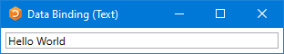
txtSource←⌽txtSource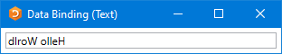
Typing into the TextBox changes the value of the bound variable:
txtSource
What is in txtSource now?
Example 2: Specified Data Type
This example illustrates the use of the optional left argument to 2015⌶ to specify the data type used to export the value of the bound variable.
The XAML
The XAML describes the same Window containing a TextBox as in Example 1.
<Window
xmlns="http://schemas.microsoft.com/winfx/2006/xaml/presentation"
xmlns:x="http://schemas.microsoft.com/winfx/2006/xaml"
Name="Temp"
Title="Data Binding (FontSize)"
SizeToContent="WidthandHeight">
<TextBox Name="txt" Text="Hello World" Width="300"
Margin="5"
FontSize="{Binding sizeSource,Mode=OneWay}"/>
</Window>
This time, the data binding expression
FontSize="{Binding sizeSource,Mode=OneWay}"/>specifies that the FontSize property of the TextBox is bound to a value in the Binding Source (which has yet to be defined) whose path is sizeSource. The binding mode is set to OneWay, which means that the FontSize property depends on the data value but the data value does not depend on the FontSize property. If the FontSize changed for any external reason (which is unlikely in the case of FontSize), it would not alter the value in sizeSource to which it is bound.
The APL Code
The function FontSize is almost identical to the function Text described in Example 1:
∇ FontSize size;⎕USING;win
[1] ⎕USING←'System'
[2] ⎕USING←,⊂'System.Windows.Controls,WPF/PresentationFramework.dll'
[3] win←LoadXAML XAML
[4] win.txtBox←win.FindName⊂'txt'
[5]
[6] ⎕EX'sizeSource'
[7] sizeSource←size
[8] win.txtBox.DataContext←Int32(2015⌶)'sizeSource'
[9]
[10] win.Show
∇
The key difference is in line [8]. Here, the left argument of (2015⌶) is Int32. This means that the exported Type of the variable sizeSource will be Int32. This Type (a 32-bit integer) is required by the FontSize property of a TextBox; no other Type will do. If this is omitted, APL will export the value of the variable using a Type dependent on its internal format (most likely Int16) and the binding will fail:
[8] win.txtBox.DataContext←Int32(2015⌶)'sizeSource'Testing the Data Binding
)LOAD wpfintro
)CS DataBinding.FontSize
#.DataBinding.FontSize FontSize 12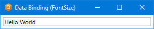
sizeSource
12
sizeSource←30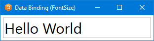
Example 3: Specification using APL
This example uses APL code to both build the user interface (instead of using XAML) and handle the data binding. Both the Text and the FontSize properties are bound to APL variables.
The APL Code
∇ TextFontSize(txt size);⎕USING;win;sink
[1] ⎕USING←'System'
[2] ⎕USING,←,⊂'System.Windows.Controls,WPF/PresentationFramework.dll'
[3] ⎕USING,←⊂'System.Windows.Controls.Primitives,WPF/PresentationFramework.dll'
[4] ⎕USING,←⊂'System.Windows,WPF/PresentationFramework.dll'
[5] ⎕USING,←⊂'System.Windows,WPF/PresentationCore.dll'
[6]
[7] ⍝ Create a Window, DockPanel and TextBox
[8] win←⎕NEW Window
[9] win.SizeToContent←SizeToContent.WidthAndHeight
[10] win.Title←'Data Binding (Text and FontSize)'
[11] win.txtBox←⎕NEW TextBox
[12] win.txtBox.Width←350
[13] win.Content←win.txtBox
[14]
[15] ⍝ Define data binding from variable "txtSource"
[16] ⍝ to the Text property of TextBox win.txtBox
[17] ⎕EX'txtSource'
[18] txtSource←txt
[19] win.txtbinding←⎕NEW Data.Binding(⊂'txtSource')
[20] win.txtbinding.Source←2015⌶'txtSource'
[21] win.txtbinding.Mode←Data.BindingMode.TwoWay
[22] win.txtbinding.UpdateSourceTrigger←Data.UpdateSourceTrigger.PropertyChanged
[23] sink←win.txtBox.SetBinding TextBox.TextProperty win.txtbinding
[24]
[25] ⍝ Define data binding from variable "sizeSource"
[26] ⍝ to the FontSize property of TextBox win.txtBox
[27] ⎕EX'sizeSource'
[28] sizeSource←size
[29] win.fntbinding←⎕NEW Data.Binding(⊂'sizeSource')
[30] win.fntbinding.Source←Int32(2015⌶)'sizeSource'
[31] win.fntbinding.Mode←Data.BindingMode.OneWay
[32] sink←win.txtBox.SetBinding TextBox.FontSizeProperty win.fntbinding
[33]
[34] win.Show
∇Apart from the code that creates the controls, the only real difference between this and the examples shown in Example 1 and Example 2 is the way that the bindings are handled.
In code (as opposed to using XAML) this is done using explicit Binding objects (Binding objects are implicit in all binding operations, but are created declaratively when using XAML). The code for binding the Text property to the txtSource variable is as follows:
[19] win.txtbinding←⎕NEW Data.Binding(⊂'txtSource')
[20] win.txtbinding.Source←2015⌶'txtSource'
[21] win.txtbinding.Mode←Data.BindingMode.TwoWay
[22] win.txtbinding.UpdateSourceTrigger←Data.UpdateSourceTrigger.PropertyChanged
[23] sink←win.txtBox.SetBinding TextBox.TextProperty win.txtbindingLine [19] creates a Binding object, passing the constructor the name of the APL variable txtSource as the Path to the binding value:
[19] win.txtbinding←⎕NEW Data.Binding(⊂'txtSource')Line [20] creates a Binding Source object using 2015⌶ as before, but this time assigns it to the Source property of the Binding object:
[20] win.txtbinding.Source←2015⌶'txtSource'Line [21] sets the Mode property of the Binding object to TwoWay (a field of the BindingMode Type). As in Example 1, this specifies two-way binding:
[21] win.txtbinding.Mode←Data.BindingMode.TwoWay[22] sets the UpdateSourceTrigger property of the Binding object to PropertyChanged (a field of the UpdateSourceTrigger Type). This causes the value in the Binding Source (in this case, txtSource) to be changed whenever the property (in this case, the Text property) of the TextBox changes. This will occur on every keystroke:
[22] win.txtbinding.UpdateSourceTrigger←Data.UpdateSourceTrigger.PropertyChanged(The three types Binding, BindingMode, and UpdateSourceTrigger are located in System.Windows.Data)
The code that establishes the binding between the sizeSource variable and the FontSize property is very similar:
[29] win.fntbinding←⎕NEW Data.Binding(⊂'sizeSource')
[30] win.fntbinding.Source←Int32(2015⌶)'sizeSource'
[31] win.fntbinding.Mode←Data.BindingMode.OneWay
[32] sink←win.txtBox.SetBinding TextBox.FontSizeProperty win.fntbindingAs in Example 2, the left-argument to (2015⌶) specifies that the exported data type of the sizeSource variable is to be Int32.
Testing the Data Binding
)LOAD wpfintro
)CS DataBinding.TextFontSizeCode
#.DataBinding.TextFontSizeCode TextFontSize 'Hello World' 30 txtSource sizeSource←(⌽txtSource) 18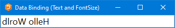
As in previous examples, when the user changes the text, the new text appears in txtSource:
txtSource
Learn to play the bouzouki!
If you want to bind two properties of the same object to two APL variables, it has to be done by writing code as shown in this example, that is, using two separate Binding Source objects. This is because, using XAML, you can only associate a single Binding Source to an object. However, this minor restriction is easily surmounted by using an APL namespace as a Binding Source, as shown in Example 4.
Example 4: Connected Properties
This example uses XAML to specify the user interface and the main components of the data binding.
The XAML
The XAML is much the same as in Example 1 and Example 2 except that it connects two properties (Text and FontSize) of the same TextBox to two paths (txtSource and sizeSource).
<Window
xmlns="http://schemas.microsoft.com/winfx/2006/xaml/presentation"
xmlns:x="http://schemas.microsoft.com/winfx/2006/xaml"
Name="Temp"
Title="Data Binding (Text and FontSize)"
SizeToContent="WidthandHeight">
<TextBox Name="txt" Width="350" Margin="5"
Text="{Binding txtSource,Mode=TwoWay,UpdateSourceTrigger=PropertyChanged}"
FontSize="{Binding sizeSource,Mode=OneWay}"/>
</Window>
The APL Code
The function TextFontSize is:
∇ TextFontSize(txt size);⎕USING;str;xml;win;options
[1] ⎕USING←'System'
[2] ⎕USING,←⊂'System.Windows,WPF/PresentationFramework.dll'
[3]
[4] win←LoadXAML XAML
[5]
[6] src←⎕NS''
[7] src.(txtSource sizeSource)←txt size
[8] options←2 2⍴'txtSource'String'sizeSource'Int32
[9]
[10] win.DataContext←options(2015⌶)'src'
[11]
[12] win.Show
∇
Lines [6-7] create a new namespace src containing two variables, txtSource and sizeSource, which are initialised to the arguments of the function:
[6] src←⎕NS''
[7] src.(txtSource sizeSource)←txt sizeLine [8] creates a local variable named options which will be used as the left argument of (2015⌶). It is a 2-column matrix – the first column is a list of the names of the variables that are to be exported by the namespace when used as a Binding Source, and the second column specifies their data types:
[8] options←2 2⍴'txtSource'String'sizeSource'Int32Line [10] creates a Binding Source object from the namespace src and a left argument options and assigns it to the DataContext property of the Window win:
[10] win.DataContext←options(2015⌶)'src'An alternative would be to assign it to the DataContext property of the TextBox object, but this would require one further line of code to identify it. The reason this works is that the DataContext property of a TextBox (and many other controls) is inherited from its parent Window. This feature allows a single Binding Source namespace to be used to specify data bindings between its component variables and any number of properties of any number of controls in the same Window.
The left argument of (2015⌶) is optional. Without it, the namespace will export all its variables using default binding types. In this case, because the binding type of sizeSource must be specified as Int32, it is necessary to use a left argument, which means specifying all the variables involved.
Testing the Data Binding
)LOAD wpfintro
)CS DataBinding.TextFontSizeXAML
#.DataBinding.TextFontSizeXAML TextFontSize'Hello World' 30 src.(txtSource sizeSource←(⌽txtSource) 18)When the user changes the text, the new text appears in txtSource:
src.txtSource
Learn to play the bouzouki! Example 5: Vector of Character Vectors
WPF data binding provides the means to bind controls that display lists of items, such as the ListBox, ListView, and TreeView controls, to collections of data. These controls are all based upon the ItemsControl class. To bind an ItemsControl to a collection object, you use its ItemsSource property.
If the right argument of 2015⌶ names a variable, or a namespace containing a variable, that is a vector other than a simple character vector, it returns a Binding Source object that provides the necessary interfaces to bind the variable as a collection to the ItemSource property of an ItemsControl.
The APL variable will normally contain a vector of character vectors, because most ItemsControl objects deal with collections of strings. However, any APL vector other than a simple character vector will be treated in this way.
This example illustrates binding between a variable containing a vector of character vectors and the items of a ListBox.
The ItemsSource property overrides the Items collection as a means to specify the content of the ItemsControl. When the ItemsSource property is set, the Items collection becomes read-only and of fixed size. The ItemsSource property supports OneWay binding by default.
The XAML
The variable XAML_FilteredList contains XAML to specify a Window containing a StackPanel. The StackPanel control is a WPF layout control that organises child controls in a single line, vertically by default. In this example, the StackPanel contains a TextBox and, below it, a WrapPanel, and below that a TextBlock. The WrapPanel is also a layout control that organises its child controls sequentially from left to right. The WrapPanel contains two ListBox controls.
<Window
xmlns="http://schemas.microsoft.com/winfx/2006/xaml/presentation"
xmlns:x="http://schemas.microsoft.com/winfx/2006/xaml"
Title="Filtered List Example"
SizeToContent="WidthAndHeight"
Topmost="true">
<StackPanel>
<TextBox Name="filter" Margin="5"
Text="{Binding Filter,Mode=TwoWay,UpdateSourceTrigger=PropertyChanged}"/>
<WrapPanel>
<ListBox Name="all" Width="135" Height="440" Margin="5" ItemsSource="{Binding DyalogNames}"/>
<ListBox Name="filtered" Width="135" Height="440" Margin="5" ItemsSource="{Binding FilteredList}"/>
</WrapPanel>
<TextBlock Text="Dyalog WPF Demo" Margin="5"/>
</StackPanel>
</Window>
The APL Code
The function FilteredList is:
∇ FilteredList;MySource;win;sink
[1]
[2] MySource←⎕NS''
[3] MySource.Filter←''
[4] MySource.FilteredList←0⍴⊂''
[5] MySource.DyalogNames←DyalogNames
[6]
[7] win←LoadXAML XAML_FilteredList
[8] win.DataContext←2015⌶'MySource'
[9] (win.FindName⊂'filter').onTextChanged←'FilteredList_TextChanged'
[10] sink←win.ShowDialog
∇This uses a namespace MySource containing the bound variables Filter, FilteredList, and DyalogNames.
Line [8] creates a Binding Source object and assigns it to the DataContext property of the Window win:
[8] win.DataContext←2015⌶'MySource'The DataContext property is inherited by all child controls, so they all share the same Binding Source. Their different Paths to different values in the Binding Source are specified in the XAML:
- The
Textproperty of theTextBoxcalled filter is bound to the variableFilterby the expressionText="{Binding Filter,...:<TextBox Name="filter" Margin="5 Text="{Binding Filter,Mode=TwoWay, - The
ItemsSourceproperty of theListBoxcalled all is bound to the variableDyalogNamesby the expressionItemsSource="{Binding DyalogNames}":<ListBox Name="all" Width="135" Height="440" Margin="5" ItemsSource="{Binding DyalogNames}"/> - The
ItemsSourceproperty of theListBoxcalled filtered is bound to the variableFilteredListby the expressionItemsSource="{Binding FilteredList}":<ListBox Name="filtered" Width="135" Height="440" Margin="5" ItemsSource="{Binding FilteredList}"/>
Testing the Data Binding
DataBinding.FilteredList.FilteredList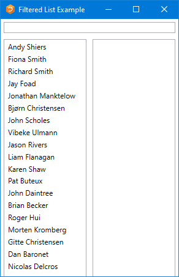
If the user types a single character, in this case "e", into the TextBox, this fires a TextChanged event which in turn fires the callback function shown:
∇ FilteredList_TextChanged a;hits
[1] hits←(⊂MySource.Filter){∨/⍺⍷⍵}¨DyalogNames
[2] MySource.FilteredList←hits/DyalogNames
∇
When the callback runs, the variable MySource.Filter, which is bound to the Text property of the TextBox, will contain "e". The function calculates a mask hits, which identifies which members of the variable DyalogNames contain this string. It then assigns that subset to the variable MySource.FilteredList. This is bound to the ItemsSource property of the right-hand ListBox, so the result is:
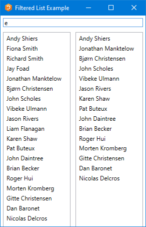
The list of results can be further reduced by typing additional characters into the TextBox.
Example 6: Vector of .NET Objects
This example illustrates data binding using a vector of .NET objects, in this case DateTime objects.
The XAML
The XAML describes a Window containing a StackPanel, inside which is a ListBox:
<Window
xmlns="http://schemas.microsoft.com/winfx/2006/xaml/presentation"
xmlns:x="http://schemas.microsoft.com/winfx/2006/xaml" Title="NetObjects (DateTime) Example" SizeToContent="WidthAndHeight" >
<StackPanel>
<TextBlock Text="Dates of forthcoming Orthodox Easters" FontSize="18" Margin="5"/>
<ListBox Name="EasterDates" Height="100" Margin="5" />
</StackPanel>
</Window>The APL Code
The function NetObjects is:
∇ NetObjects;⎕USING;win;dt
[1] ⎕USING←'System'
[2] win←LoadXAML XAML
[3] win.dates←win.FindName⊂'EasterDates'
[4] dt←{⎕NEW DateTime ⍵}¨Easter
[5] win.dates.ItemsSource←2015⌶'dt'
[6] sink←win.ShowDialog
∇
Line [3] uses FindName to obtain a ref to the ListBox (defined in the XAML) called EasterDates:
[3] win.dates←win.FindName⊂'EasterDates'The global variable Easter contains a vector of 3-element numeric vectors representing the dates of forthcoming Orthodox Easter Sundays:
↑Easter
2015 4 12
2016 5 1
2017 4 16
2018 4 8
2019 4 28
2020 4 19
2021 5 2
2022 4 24
2023 4 16
2024 5 5
Line [4] creates a vector of DateTime objects from the global variable Easter:
[4] dt←{⎕NEW DateTime ⍵}¨EasterThen, Line [5] creates a binding source object from this array and assigns it to the ItemsSource property of the ListBox:
[5] win.dates.ItemsSource←2015⌶'dt'Testing the Data Binding
)LOAD wpfintro
DataBinding.NETObjects.NETObjects
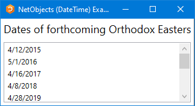
Example 7: Data Conversion
This example is similar to Example 6 but illustrates how numeric data in ⎕TS format can be converted to DateTime type.
The XAML
The XAML describes a Window containing a StackPanel, inside which is a ListBox:
<Window
xmlns="http://schemas.microsoft.com/winfx/2006/xaml/presentation"
xmlns:x="http://schemas.microsoft.com/winfx/2006/xaml" Title="DateTimes using ⎕TS data" SizeToContent="WidthAndHeight" >
<StackPanel>
<TextBlock Text="Some High Tides at Portsmouth, England"
FontSize="18" Margin="5"/>
<ListBox Name="TideTimes" Height="200" Margin="5" />
</StackPanel>
</Window>The APL Code
The function Tides is:
∇ Tides;⎕USING;win;dt;Highs
[1] ⎕USING←'System'
[2] win←LoadXAML XAML_Tides
[3] win.times←win.FindName⊂'TideTimes'
[4] Highs←(⊂2016 2 18),¨(7 9)(8 44)(19 47)(21 47)
[5] Highs,←(⊂2016 2 19),¨(8 17)(10 12)(20 51)(22 51)
[6] dt←7↑¨Highs
[7] win.times.ItemsSource←DateTime(2015⌶)'dt'
[8] sink←win.ShowDialog
∇
Line [3] uses FindName to obtain a ref to the ListBox (defined in the XAML) called TideTimes:
[3] win.times←win.FindName⊂'TideTimes'Lines [4-5] create a vector of integer vectors each of which species the time and date of a high tide at Portsmouth. Line [6] extends each to 7-elements, which is required to represent a DateTime object. Line [7] creates a binding source object from this array and assigns it to the ItemsSource property of the ListBox. The left argument DateTime specifies that the data be cast to that type:
[7] win.times.ItemsSource←DateTime(2015⌶)'dt'Testing the Data Binding
)LOAD wpfintro
DataBinding.NetObjects.Tides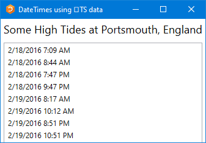
Example 8: Vector of Namespaces
This example illustrates data binding using a vector of namespaces.
Each row in the WPF DataGrid control is represented by an object, and each column as a property of that object. Each row in the DataGrid is bound to an object in the data source, and each column in the DataGrid is bound to a property of the data object.
The XAML
The XAML describes a Window containing a DockPanel, inside which is a DataGrid:
<Window
xmlns="http://schemas.microsoft.com/winfx/2006/xaml/presentation"
xmlns:x="http://schemas.microsoft.com/winfx/2006/xaml" Title="DataGrid Example" Height="500" SizeToContent="Width" Topmost="true">
<DockPanel>
<DataGrid Name="DG1" ItemsSource="{Binding}" AutoGenerateColumns="False" >
<DataGrid.Columns>
<DataGridTextColumn Header="Wine" Binding="{Binding Name}"/>
<DataGridTextColumn Header="Price" Binding="{Binding Price, StringFormat=C}" />
</DataGrid.Columns>
</DataGrid>
</DockPanel>
</Window>
The phrase ItemsSource="{Binding}" states that the content of the DataGrid is bound to a data source, which in this case will be inherited from the DataContext property of the parent Window.
Binding="{Binding Name}" specifies that the contents of the first column are bound to a Path called Name in the data source.
Similarly, Binding="{Binding Price, StringFormat=C}" specifies that the Path for the second column is Price (StringFormat=C specifies the default currency format).
The APL Code
The function Grid is:
∇ Grid;⎕USING;MySource;win
[1] ⎕USING←'System'
[2] winelist←⎕NS¨(⍴Wines)⍴⊂''
[3] winelist.Name←Wines
[4] winelist.Price←0.01×10000+?(⍴Wines)⍴10000
[5]
[6] win←LoadXAML XAML
[7] win.DataContext←2015⌶'winelist'
[8] win.Show
∇The global variable Wines contains a vector of character vectors, each of which is the name of a wine. Lines [2-4] create winelist, a vector of namespaces, of the same length, each of which contains two variables called Name and Price.
Testing the Data Binding
)LOAD wpfintro
)CS DataBinding.DataGrid
#.DataBinding.DataGrid
Grid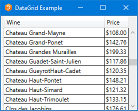
The prices can be rounded to the nearest $5:
winelist.Price←5×⌊0.5+winelist.Price÷5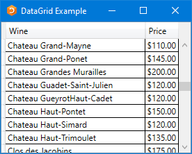
Example 9: Matrix of Namespaces
This example illustrates data binding using a matrix. It is very similar to Example 8 except that it uses a matrix instead of a vector of namespaces.
Each row in the WPF DataGrid control is represented by an object, and each column as a property of that object. Each row in the DataGrid is bound to an object in the data source, and each column in the DataGrid is bound to a property of the data object.
The XAML
The XAML describes a Window containing a DockPanel, inside which is a DataGrid. The XAML is identical to the XAML in Example 8, except for the window caption:
<Window
xmlns="http://schemas.microsoft.com/winfx/2006/xaml/presentation"
xmlns:x="http://schemas.microsoft.com/winfx/2006/xaml" Title="DataGrid Matrix Example" Height="500" SizeToContent="Width" Topmost="true">
<DockPanel>
<DataGrid Name="DG1" ItemsSource="{Binding}" AutoGenerateColumns="False" >
<DataGrid.Columns>
<DataGridTextColumn Header="Wine" Binding="{Binding Name}"/>
<DataGridTextColumn Header="Price" Binding="{Binding Price, StringFormat=C}" />
</DataGrid.Columns>
</DataGrid>
</DockPanel>
</Window>
The phrase ItemsSource="{Binding}" states that the content of the DataGrid is bound to a data source, which in this case will be inherited from the DataContext property of the parent Window.
Binding="{Binding Name}" specifies that the contents of the first column are bound to a Path called Name in the data source.
Similarly, Binding="{Binding Price, StringFormat=C}" specifies that the Path for the second column is Price (StringFormat=C specifies the default currency format).
The APL Code
The function Grid is:
∇ Grid;⎕USING;MySource;win;info
[1] ⎕USING←'System'
[2] ⎕EX'winelist'
[3] winelist←Wines,[1.5]0.01×10000+?(⍴Wines)⍴10000
[4] win←LoadXAML XAML
[5] info←(⍪'Name' 'Price'),⊂Object
[6] win.DataContext←info(2015⌶)'winelist'
[7] win.Show
∇
As in Example 8, the global variable Wines contains a vector of character vectors, each of which is the name of a wine. Lines [2-4] create a matrix called winelist whose first column contains the names of the wines and whose column their (randomly generated) prices. As this is a global variable, the variable is expunged before being used to remove any previous data binding information that was associated with it.
Grid[5]creates the left argument for (2015⌶), which defines the names and data types of the properties which the columns of the matrix winelist will be exposed as. In this case, the names of the paths are Name and Price, and their data types are both System.Object; this means that the first column will be exposed as Name and the second as Price, matching the path names specified in the XAML:
<DataGridTextColumn Header="Wine" Binding="{Binding Name}"/>
<DataGridTextColumn Header="Price" Binding="{Binding Price, StringFormat=C}" />Testing the Data Binding
)LOAD wpfintro
)CS DataBinding.DataGridMatrix
#.DataBinding.DataGridMatrix
Grid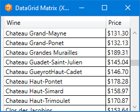
The prices can be rounded to the nearest $5:
winelist[;2]←5×⌊0.5+winelist[;2]÷5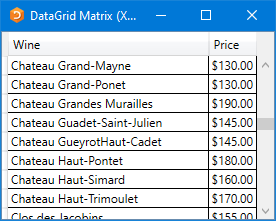
Using Code
The same result can be achieved using APL instead of XAML, as illustrated by the function GridCodeNoFmt (the function is so-named because this code is insufficient to display the second column in currency format):
∇ GridCodeNoFmt;⎕USING;MySource;win;info;fmt
[1] ⎕USING←'System'
[2] ⎕USING,←,⊂'System.Windows.Controls,"WPF/PresentationFramework.dll'
[3] ⎕USING,←⊂'System.Windows.Controls.Primitives,"WPF/PresentationFramework.dll'
[4] ⎕USING,←⊂'System.Windows,WPF/PresentationFramework.dll'
[5] ⎕USING,←⊂'System.Windows,WPF/PresentationCore.dll'
[6]
[7] ⎕EX'winelist'
[8] winelist←Wines,[1.5]0.01×10000+?(⍴Wines)⍴10000
[9] win←⎕NEW Window
[10] win.Title←'DataGrid Matrix (Code)'
[11] win.grid←⎕NEW DataGrid
[12] info←(⍪'Name' 'Price'),⊂Object
[13] win.grid.ItemsSource←info(2015⌶)'winelist'
[14] win.grid.Height←500
[15] win.Content←win.grid
[16] win.SizeToContent←SizeToContent.WidthAndHeight
[17] win.Show
∇
This is because the DataGrid generates its columns automatically with default formatting. To apply special formatting to one or more columns, it is necessary to set the AutoGenerateColumns property to 0 and to generate the columns programmatically, as is shown in the second version of the function, GridCode:
∇ GridCode;⎕USING;MySource;win;info;fmt
[1] ⎕USING←'System'
[2] ⎕USING,←,⊂'System.Windows.Controls,"WPF/PresentationFramework.dll'
[3] ⎕USING,←⊂'System.Windows.Controls.Primitives,"WPF/PresentationFramework.dll'
[4] ⎕USING,←⊂'System.Windows,WPF/PresentationFramework.dll'
[5] ⎕USING,←⊂'System.Windows,WPF/PresentationCore.dll'
[6]
[7] ⎕EX'winelist'
[8] winelist←Wines,[1.5]0.01×10000+?(⍴Wines)⍴10000
[9] win←⎕NEW Window
[10] win.Title←'DataGrid Matrix (Code with Formatting)'
[11] win.grid←⎕NEW DataGrid
[12] info←(⍪'Name' 'Price'),⊂Object
[13] win.grid.ItemsSource←info(2015⌶)'winelist'
[14] win.grid.Height←500
[15] win.grid.AutoGenerateColumns←0
[16] win.Content←win.grid
[17] win.SizeToContent←SizeToContent.WidthAndHeight
[18] ⍝ Add columns and set format
[19] win.grid.Columns.Add¨'' 'C'{
[20] col←⎕NEW DataGridTextColumn
[21] col.Header←⍵
[22] col.Binding←⎕NEW Data.Binding(⊂⍵)
[23] col.Binding.StringFormat←,⍺
[24] col
[25] }¨'Name' 'Price'
[26]
[27] win.Show
∇In this version of the function, lines [19-25] create the two columns Name and Price, applying currency format to the Price column.